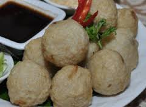

Pempek Adaan

Resep
Bahan Pempek Adaan
Bahan:
500 gr Ikan giling (tenggiri/gabus/kakap)
350 ml Santan dingin
250 gr Tepung sagu
1 butir Telur ayam
50 gr Bawang merah, iris halus
1/2 sdt Merica bubuk
2 sdm Bawang goreng
secukupnya Minyak sayur untuk menggoreng
Langkah:
Campurkan ikan giling dan santan dingin. Aduk hingga tercampur rata menggunakan tangan.
Masukkan telur, garam, dan merica. Aduk rata.
Tambahkan sagu, bawang merah iris, dan bawang goreng. Aduk kembali hingga tercampur rata.
Bentuk adonan menjadi bulatan. Bisa menggunakan scoop ice cream atau bisa juga dengan tehnik membuat bakso yaitu ambil adonan menggunakan tangan lalu remas hingga adonan keluar diantara ibu jari dan telunjuk membentuk bulatan lalu ambil menggunakan sendok
Goreng dalam minyak panas dan banyak dengan api sedang hingga kuning kecoklatan. Angkat dan tiriskan. Sajikan dengan kuah cuko.
Bahan Cuko:
750 gr Gula aren/gula batok
2 liter Air
3,5 sdm Garam halus
5 biji Asam kandis
15 siung Bawang putih, dihaluskan
100 gr Cabe rawit